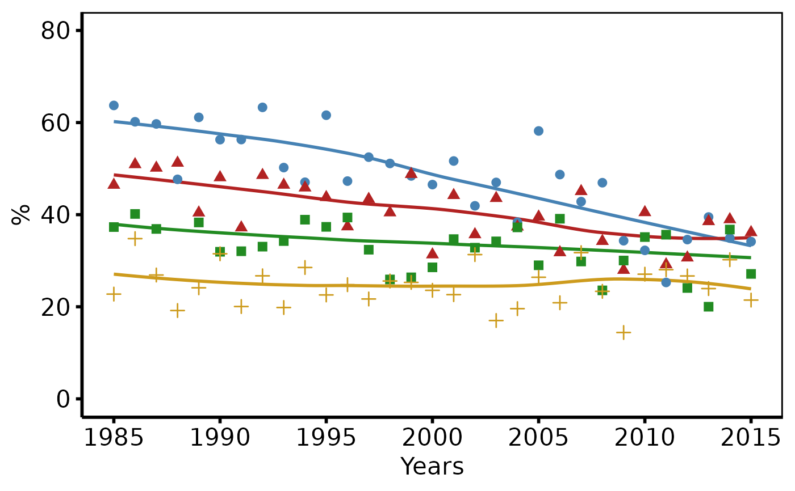

Validates a patient-level data frame, computes per-x-value summary
statistics (mean or median), and returns an hv_trends object.
Call plot.hv_trends on the result to obtain a bare
ggplot2 trend plot (LOESS smooth + annual summary points) that you
can decorate with colour scales, axis limits, and hv_theme.
Usage
hv_trends(
data,
x_col = "year",
y_col = "value",
group_col = "group",
summary_fn = c("mean", "median")
)Arguments
- data
Patient-level data frame (one row per patient).
- x_col
Name of the numeric/integer time column (e.g. surgery year). Default
"year".- y_col
Name of the continuous outcome column. Default
"value".- group_col
Name of the grouping column, or
NULLfor a single group. Default"group".- summary_fn
Function used to compute the per-x-point estimate:
"mean"or"median". Default"mean".
Value
An object of class c("hv_trends", "hv_data"); call
plot() on the result to render the figure — see
plot.hv_trends. The list contains:
$dataThe original patient-level data frame.
$metaNamed list:
x_col,y_col,group_col,summary_fn,n_obs,n_groups.$tablesList with one element:
summary— a data frame of per-x (per-group) summary statistics used for the point overlay.
See also
plot.hv_trends to render as a ggplot2 figure,
hv_theme for the publication theme,
sample_trends_data for example data.
Other Temporal trends:
plot.hv_trends()
Examples
dta <- sample_trends_data(n = 600, year_range = c(1985L, 2015L),
groups = c("I", "II", "III", "IV"))
# 1. Build data object
tr <- hv_trends(dta, summary_fn = "median")
tr # prints observation and group counts
#> <hv_trends>
#> N obs : 600 (4 groups)
#> x / y : year / value
#> Group col : group
#> Summary fn : median
# 2. Bare plot -- undecorated ggplot returned by plot.hv_trends
p <- plot(tr)
# 3. Decorate: colour palette, axis scales, labels, theme
p +
ggplot2::scale_colour_manual(
values = c(I = "steelblue", II = "firebrick",
III = "forestgreen", IV = "goldenrod3"),
name = "NYHA Class"
) +
ggplot2::scale_x_continuous(limits = c(1985, 2015),
breaks = seq(1985, 2015, 5)) +
ggplot2::scale_y_continuous(limits = c(0, 80),
breaks = seq(0, 80, 20)) +
ggplot2::coord_cartesian(xlim = c(1985, 2015), ylim = c(0, 80)) +
ggplot2::labs(x = "Years", y = "%") +
hv_theme("poster")
